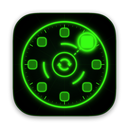
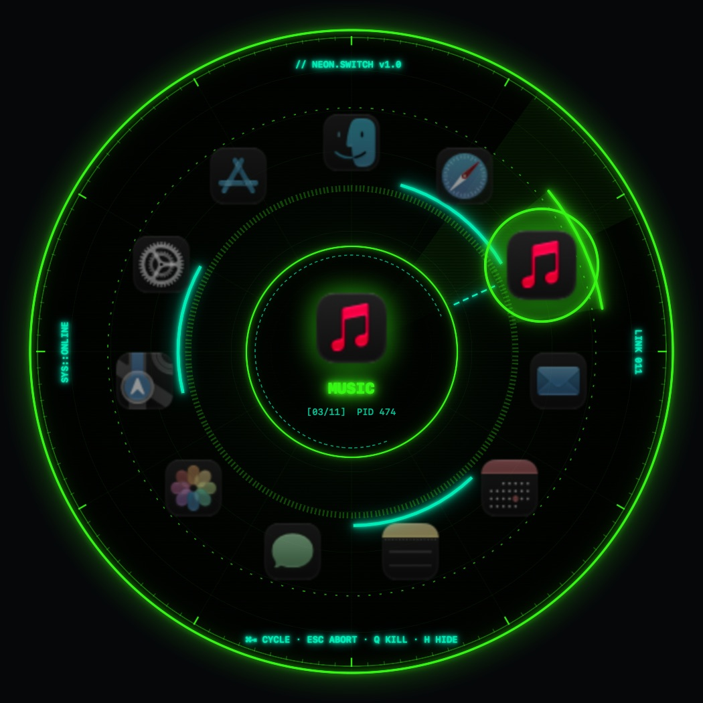

NEONSWITCHA circular, cyberpunk replacement for the macOS app switcher. Your apps orbit a glowing neon ring: hold ⌘, tap Tab, let go to jack in.

// 09 PRESETS
Plus Vaporwave, Akira and Arctic Ghost in the app. Each theme has its own animated backdrop: radar grid, digital rain, hex cells or an outrun horizon.
// SPEC SHEET
Takes over the real shortcut. A quick tap switches instantly, just like the native switcher. Toggle it off from the menu bar any time.
Apps sit on a ring in most-recently-used order. The selection keeps rotating forward past the start instead of snapping back.
Point at any slice of the ring to select, click to switch, scroll to rotate. Optional sticky mode keeps it open after you let go of ⌘.
Two-tone palettes, animated backdrops and per-theme HUD taglines. Glitch text, scanlines and ring animations can each be turned off.
Press Q to quit or H to hide the selected app without leaving the switcher. Minimized windows come back when you switch.
Pure Swift + SwiftUI, a ~2 MB download, no Dock icon. Lives in your menu bar with launch-at-login built in.
// BOOT SEQUENCE
Go to System Settings → Privacy & Security and click Open Anyway. Or run this once in Terminal:
xattr -dr com.apple.quarantine /Applications/NeonSwitch.appNeonSwitch needs it to catch ⌘Tab and bring apps to the front. It doesn't log or send anything.
// CONTROLS
| ⌘ Tab / ⌘ ⇧ Tab | Cycle forward / back. Release ⌘ to switch. |
| ← → ↑ ↓ | Move the selection. |
| Return / Esc | Switch now / cancel. |
| Q / H | Quit / hide the selected app. |
| Hover · Click · Scroll | Select · switch · rotate the ring. Click outside to cancel. |